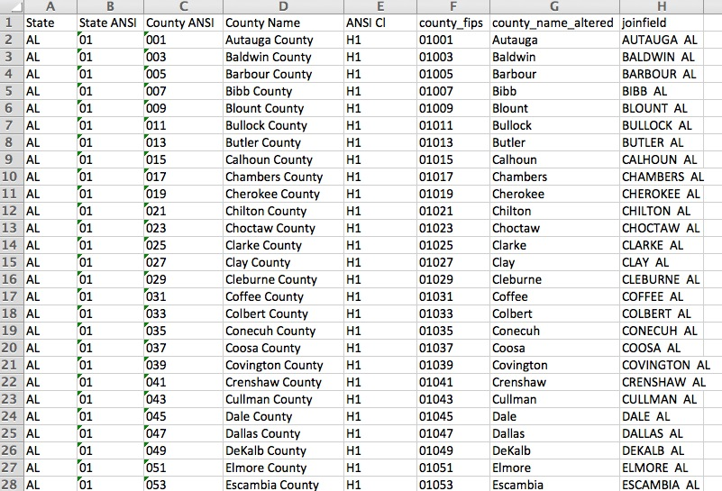

Data Journalism 2013
Class 7 - Wednesday June 19
Scraping and cleaning
In this class we'll do a tiny bit of scraping and tk.
Katie, Kate and Roni are critiquing tk this week.
Lab: Making a very basic scraping robot
- Google for a database of zip codes.
- In excel, generate a column that looks like this:
<a href = 'http://www.fight4rx.org/map/getpharms3.php?address=11201'</a>11201</a> - Copy 10 of your links into a new html file.
- Install a firefox add-in called "DownThemAll!"
- Download your 10 links into a new folder.
- CD into your folder and copy and paste the following:
for file in *.html do cat "$file" echo done > pharma.txt
- Open pharma.txt in a text editor. Replace
},with\nusing regular expressions and save your file. - Open pharma.txt in Excel and use text to columns
- Watch out for duplicates in your data.
Cleaning messy data
Data in the real world is often not as nicely formatted as the data you have worked with in class. In this exercise, you're a data reporter doing a story about successful gun traces in Chicago. (A gun trace is where they find out where a gun found in a crime was purchased.) After some phone calls, you get your hands on some source data. Each row in this data represents a county in the United States and how many Chicago guns were purchased there. Go ahead and download it.
- Before we start getting ahead of ourselves, let's think of questions we might ask. Add a couple of your own in this Google Doc.
- Open the file in Excel and save it as an Excel spreadsheet. Add column headers.
- How sad does this data make us?
- Use text to columns or regular expressions in a text editor to get a column for the county name and state. We'll do both. (Amanda likes text-to-columns, Kevin prefers the text editor.)
- How sad would a pivot table of county names and sum of counts make us? Why?
- It's pretty clear that we need some data that has unique values for each county. Googling 2013 us county fips codes should take you close to this site, though there are others and they're pretty similar. Save the file from the census, open it in excel so it's nicely formatted, and paste it into a new tab called "county-lookup" in your chicago traces file.
- You might need to set your columns to be text and re-paste to keep in the leading zeros. Every Excel is different, especially the German one.
- Be happy if your sheet looks like this:
- Look at the data and see if it makes any sense.
- Make a new column for the 5-digit county FIPS code for each county. Call it county_fips.
- In your traces sheet, make a new column called "joinfield" that pastes the county name and state together.
- Do the same in your county-lookup sheet. You might need to do this in a couple steps: make a new field that has just the county name on it (lose the word "county"), make it uppercase, and add the state name. It might look like this:
 - Look down the sheet to see if we might already have problems later on with this method.
- We're ready to make a crude attempt a vlookup. Try to get a column called "county_fips" in your traces sheet.
- Which ones didn't match? Why?
- Make a new field called is_error. Use this formula in it (note: for me, column G is "county_fips" but it might be something different for you)
=IF(ISERROR(F2),1,0) - Sort your traces data by is_error and then count. This will let you prioritize your targets. How many do we need to fix?
- What's our first target?
- Lose the parishes and see what happens.
- Fix Alaska too.
- And Puerto Rico.
- Check out the Saints and see what you can do about it. (You might need to go back and fix some manually too.)
- Make a pivot table of is_error and sum of count. This way we can quantitatively answer how good our merge was.
- Once you figure out the dance, go through as many as you can. Sorting by name and iserror can help too.
- You can stop and help a neighbor once you have more than 98 percent match rate and you are not missing any counties with more than 30 guns traced. (Note that the NYT Excel gods are cruel and if you worked there you would need to join them all.)
- How could this cleaning have been avoided?
- With the FIPS codes, what can we do that we couldn't before?
- What percent of counties had at least one gun traced to Chicago?
- One stats program called R would let us map these without too much trouble. What questions might these maps lead you to ask? Where might you go to get answers?


- Here's the NYT take and story.
- If there's time, make an HTML page with a headline, a lede, and a table of guns by state. Practice your table styling!